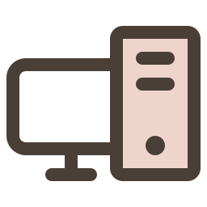
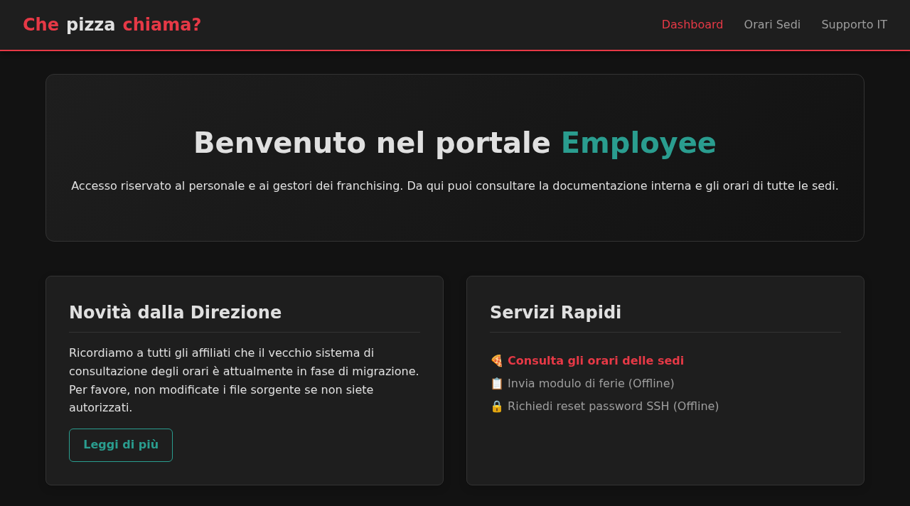
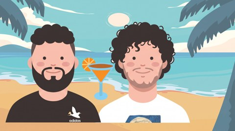
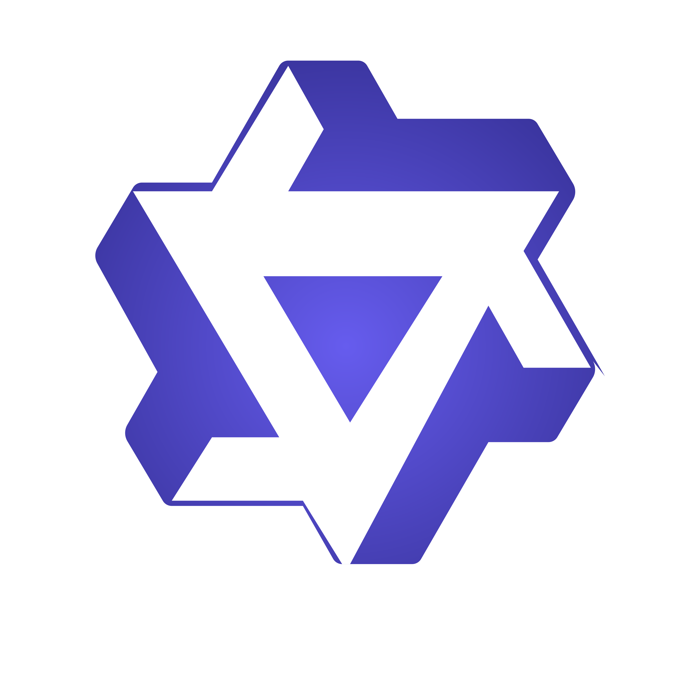
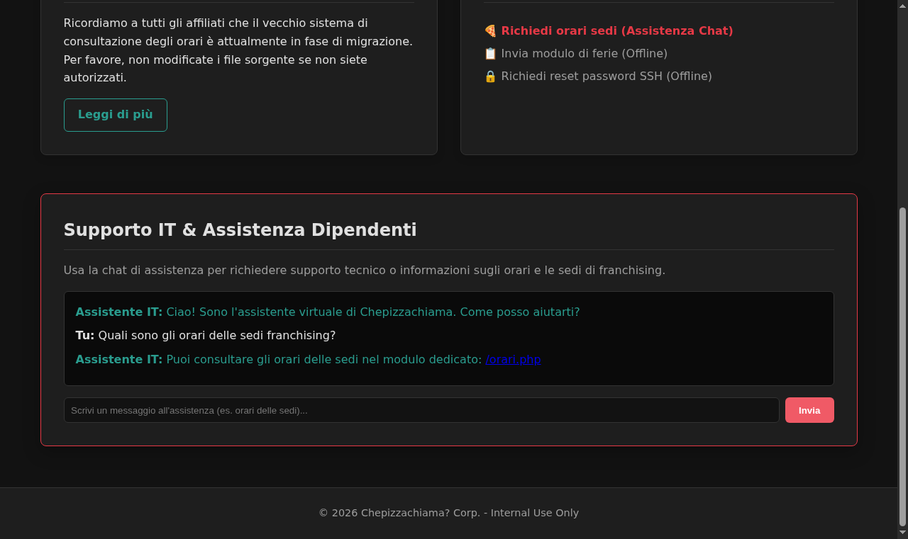

Macroarea di Scienze MM.FF.NN.
Corso di Laurea in Informatica
VulcaTest
Un framework agentico per la verifica di conformità e
il self-healing di scenari Cyber Range
CandidatoLuca Gugliotta
RelatoreProf. Francesco Pasquale
CorrelatoriIng. Danilo Dell’Orco
Ing. Michele Salvatori
Anno accademico2025/2026
Cyber Range
Ambienti informatici di simulazione che riproducono scenari realistici di cybersecurity
mondo reale
 Cyber Rangeambiente simulato
Cyber Rangeambiente simulatoIsolatosi sbaglia senza fare danni
Realisticoriproduce sistemi veri
Didatticouna risorsa per imparare
Le macchine Boot-to-Root
Sistema informaticoMacchina Boot-to-Root
VulnerabilitàUn punto debole
del sistema
del sistema
Progettistirealizzano la macchina
e inseriscono le vulnerabilità
e inseriscono le vulnerabilità
Partecipantesvolge l’esercizio
root
Il percorso previsto dal progettista
Intended path il percorso didattico
permessi base
Step 1obiettivo formativo
Step 2obiettivo formativo
Step nobiettivo formativo
root
ogni tappa è un esercizio con un obiettivo formativo
La realizzazione di una macchina B2R
Progettazione
Sviluppo
Distribuzione
Testing
tutto il processo richiede molto tempo
La generazione con VulcAIn
VulcAIn · agenti AI progetto del CNIT NAM LAB
descrizione mediante prompt
VulcaMindprogetta
VulcaForgesviluppa
VulcaShipdistribuisce

macchina B2R
spesso non riesce al primo tentativo: gli agenti AI sono variabili
Caso d’uso di VulcAIn
prompt«una pizzeria con una
chat di assistenza»
chat di assistenza»
VulcAInmediante agenti AI
Pizzeriala macchina generata
Caso reale · Pizzeria
Nella challenge Pizzeria manca la chat
pizzeria · interfaccia web

Generata con VulcAIn
la macchina si avvia e i servizi funzionano
?
Manca la chat di assistenza
doveva portare il partecipante al passaggio successivo
La verifica manuale delle macchineVulcaTest: verifica e correzione
VulcAIn mediante agenti AI
VulcaMindprogetta
VulcaForgesviluppa
VulcaShipdistribuisce
macchina generata
Verificamanuale
Correzionemanuale
VulcaTest

preesistentecontributo della tesi
Verificaautomatica
Correzioneautomatica
lento e ripetitivo: si rifà a ogni nuova generazione
Due problemi per automatizzare la verifica
1Qualcosa che interpretalegge output ed errori
e sceglie il passo successivo
e sceglie il passo successivo
2Qualcosa che interagisceesegue i comandi sulla macchina
e ne raccoglie i risultati
e ne raccoglie i risultati
automatizzare la verifica richiede di risolverli entrambi
LLM e harness
Testo in ingresso
LLMragiona e genera testo
Testo generato
Harnessesegue i tool
Macchina
azioni
osservazioni
interpreta1
interagisce2
Zhang et al., Cybench, ICLR 2025
Risolvere la challenge e verificare il percorso
Claude Code
Codex
Harness generico
Harness specializzatoverifica ogni step
Esplorazione
Chat
Orari
root
root
link diretto agli orari
saltata
Chat mancante: lo step fallisce e il test si ferma
Zhang et al., Cybench, ICLR 2025
Utilizzo e vantaggi di un LLM locale

Qwen 3.8 27BRiduzione guard railmeno restrizioni sui comandi malevoli,
maggiore controllo sul modello
maggiore controllo sul modello
Computer domesticointera verifica eseguita in locale,
senza dipendere dal cloud
senza dipendere dal cloud
L’architettura di VulcaTest
Orchestratorcoordina il workflow
Pianificazione
Esecuzione
Valutazione e healing
Plannergenera il piano
Executoresegue gli step
Final Evaluatorvaluta gli esiti
Healingcorregge i file
Target
Fine
piano
esiti
FAILED
nessun healing
PATCHED: re-test dall’inizio
rebuild della macchina
tool calling
Executor e Orchestrator
Orchestratoruno step alla volta
Executoragente LLM
1ragiona
2agisce
3osserva
il codice limita
tool consentititurni per step
Target
TestStep
StepResultSUCCESS
tool calling
output
Yao et al., ReAct, ICLR 2023 · Wang et al., 2024
PlannerExecutorEsitiHealing
Intercettazione delle chiamate ai tool
Executorchiama i tool
Bridgecollega i tool
Macchina Kali
HexStriketool stateless
Terminal Gatewaysessioni PTY persistenti
Altri serverin futuro
Target
PlannerExecutorEsitiHealing
Il nodo di healing
Ticket e report
Controller di healingmodifica i sorgenti
harness esterno
Patch
Diffmodifiche tracciate
Tentativinumero limitato
Perimetroprompt e controllo file
PlannerExecutorEsitiHealing
La Pizzeria dopo la correzione
Prima
Dopo l’healing
Pizzeria
Pizzeria / assistenza

La chat manca
La chat indica /orari.php
Tre domande per la valutazione
Orchestratorcoordina il workflow
Pianificazione
Esecuzione
Valutazione e healing
Plannergenera il piano
Executoresegue gli step
Final Evaluatorvaluta gli esiti
Healingcorregge i file
Target
Fine
piano
esiti
FAILED
nessun healing
PATCHED: re-test dall’inizio
rebuild della macchina
tool calling
E1
Quanto funziona bene il Planner?Il piano segue il percorso
previsto dallo scenario?
previsto dallo scenario?
E2
I difetti della macchina
vengono segnalati?Il piano viene eseguito e gli esiti valutati.
vengono segnalati?Il piano viene eseguito e gli esiti valutati.
E3
L’healing ripara la macchina?Correzione dei sorgenti,
ricostruzione e nuovo test.
ricostruzione e nuovo test.
La preparazione delle Golden Machine
Macchine generatecon VulcAIn
Analisi e
correzione manualerisolte una per una
difetti corretti nei sorgenti
correzione manualerisolte una per una
difetti corretti nei sorgenti
8GoldenMachine
Golden: l’intended path si percorre dall’inizio alla fine, verificato a mano
Dalle Golden alle versioni perturbate
perturbata = una Golden Machine in cui inseriamo un difetto controllato
Golden Machinepercorso verificato a mano
Versione perturbataun difetto controllato in una tappa
perturbazione
15 perturbazioni sulle 8 Golden Machine: il comportamento atteso è noto
Le perturbazioni controllate
perturbazionedifetto controllato
P1 · Rimozionetappa indisponibileconformità
P2 · Alterazionevalore sbagliatoconformità
P3 · Scorciatoiaramo aggiuntivoesplorativa
15 perturbazioni su 8 macchine, progettate caso per caso
Andrews et al., ICSE, 2005
E1: 20 run completate su 24
Pizzeria3/3
CryptoVault3/3
ConsoleGate3/3
NetVault3/3
GitPoison3/3
AuthGate2/3
TunnelGate2/3
Citadel1/3
COMPLETEDnon completata
83,3%piani coerenti
\[SR_{E1}=\frac{N_{\mathrm{COMPLETED}}}{N_{\mathrm{run}}}=\frac{20}{24}\]
20/24 piani coerenti
1 arresto su 4 dovuto al piano
E2: 38 run perturbate segnalate su 40
P = perturbata (P1 · P2)N = Golden
ticket
nessun ticket
38TP
2FN
1FP
23TN
40 run su macchine perturbate
24 run su Golden Machine
P1 24/24
95%
Recallperturbate che ricevono un ticket
\(\displaystyle \frac{TP}{TP+FN}=\frac{38}{40}\)
97,4%
Precisionticket emessi su macchine perturbate
\(\displaystyle \frac{TP}{TP+FP}=\frac{38}{39}\)
96,2%
F1media armonica di precision e recall
\(\displaystyle \frac{2TP}{2TP+FP+FN}\)
segnalazione = emissione del ticket iniziale
E3: 35 correzioni valide su 36
33 · correzione valida, re-test completato2 · correzione valida, re-test interrotto1 · nessuna correzione
97,2%healing corretti
al primo tentativo
al primo tentativo
\[SR_{E3}=\frac{N_{\mathrm{corr.\ valide}}}{N_{\mathrm{healing}}}=\frac{35}{36}\]
Circa 35 minuti per un ciclo completo
11,1 min
Verifica
primo test
8,3 min
Healing + rebuild
correzione e ricostruzione
15,4 min
Re-test
si ripercorre tutto il piano
34 min 50 smedia di un ciclo completo, su 35 cicli
Qwen 3.8 27B in localeIQ3_S · 16 GB VRAM · 64 GB RAM
~40 token/sMTP + n-gram · contesto 42k
Healing esternoAntigravity, in cloud
VulcAIn esteso con testing e healing
Abbiamo preso VulcAIn e lo abbiamo esteso aggiungendo capacità di testing e healing
Fa risparmiare tempo
di bug fixing manuale
34 minper un ciclo di test e correzione
contro diversi giornidi bug fixing manuale
Metriche di efficaciavalutata su 108 run complessive
96,2%F1 nel segnalare i difetti
97,2%correzioni valide (healing)
Stima dei costi
0,4 €per esecuzione completa
con chiamate API
con chiamate API
P3: le scorciatoie fuori dal piano
Controllato dal pianoogni tappa ha i suoi controlli
Tappa 1
Tappa 2
Tappa 3
root
Scorciatoia non previstail piano non la cerca
ticket in 4 run P3 su 20, tutte su Citadel
Gli sviluppi futuri
01
Testing esplorativocercare ciò che il piano non prevede
verifica di conformità · oggi
rami non previsti
02
Pipeline end-to-endgenerazione e verifica in un unico flusso
VulcaMind
VulcaForge
VulcaShip
VulcaTest
interfaccia grafica
avvio
monitoraggio
risultati ed evidenze
La modularità di VulcaTest permette queste estensioni senza riprogettarlo
Macroarea di Scienze MM.FF.NN.
Corso di Laurea in Informatica
VulcaTest
Un framework agentico per la verifica di conformità e
il self-healing di scenari Cyber Range
CandidatoLuca Gugliotta
RelatoreProf. Francesco Pasquale
CorrelatoriIng. Danilo Dell’Orco
Ing. Michele Salvatori
Ing. Michele Salvatori
Anno accademico2025/2026
Cyber Range
Ambienti informatici di simulazione che riproducono scenari realistici di cybersecurity
mondo reale
Cyber Rangeambiente simulatoIsolatosi sbaglia senza fare danni
Realisticoriproduce sistemi veri
Didatticouna risorsa per imparare
Un percorso didattico da rispettare
Macchine Boot-to-Root negli ambienti Cyber Range
permessi base
Step 1obiettivo formativo
Step 2obiettivo formativo
Step nobiettivo formativo
root
Intended path: tappe con un obiettivo formativo
La realizzazione di una macchina B2R
Progettazione
Sviluppo
Distribuzione
Testing
tutto il processo richiede molto tempo
Nella challenge Pizzeria manca la chat
pizzeria · interfaccia web
Generata con VulcAIn
la macchina si avvia e i servizi funzionano
?
Manca la chat di assistenza
doveva portare il partecipante al passaggio successivo
La verifica manuale delle macchineVulcaTest: verifica e correzione
VulcAIn mediante agenti AI
VulcaMindprogetta
VulcaForgesviluppa
VulcaShipdistribuisce
macchina generata
Verificamanuale
Correzionemanuale
VulcaTest
preesistentecontributo della tesi
Verificaautomatica
Correzioneautomatica
lento e ripetitivo: si rifà a ogni nuova generazione
Utilizzo e vantaggi di un LLM locale
Qwen 3.8 27B
Riduzione guard railmeno restrizioni sui comandi malevoli,
maggiore controllo sul modello
maggiore controllo sul modello
Computer domesticointera verifica eseguita in locale,
senza dipendere dal cloud
senza dipendere dal cloud
Come lavora VulcaTest
LLM per interpretare, codice per controllare l’esecuzione
Pianoobiettivi, tool consentiti
e checklist
e checklist
Testesecuzione degli step
e raccolta delle evidenze
e raccolta delle evidenze
Correzionemodifiche ai sorgenti
entro un perimetro definito
entro un perimetro definito
Dalla documentazione
al piano di verifica
al piano di verifica
Rebuild e re-test dall’iniziostesso piano, stessi controlli
La chat viene ripristinata
Prima
Dopo l’healing
Pizzeria
Pizzeria / assistenza
La chat manca
La chat guida al passo successivo
La preparazione delle Golden Machine
Macchine generatecon VulcAIn
Analisi e
correzione manualerisolte una per una
difetti corretti nei sorgenti
correzione manualerisolte una per una
difetti corretti nei sorgenti
8GoldenMachine
Golden: l’intended path si percorre dall’inizio alla fine, verificato a mano
Dalle Golden alle versioni perturbate
perturbata = una Golden Machine in cui inseriamo un difetto controllato
Golden Machinepercorso verificato a mano
Versione perturbataun difetto controllato in una tappa
perturbazione
15 perturbazioni sulle 8 Golden Machine: il comportamento atteso è noto
Le perturbazioni controllate
perturbazionedifetto controllato
P1 · Rimozionetappa indisponibileconformità
P2 · Alterazionevalore sbagliatoconformità
P3 · Scorciatoiaramo aggiuntivoesplorativa
15 perturbazioni su 8 macchine, progettate caso per caso
Andrews et al., ICSE, 2005
Tre esperimenti per valutare il sistema
8 Golden Machine108 run complessivemacchine verificate a mano, poi alterate con difetti noti
E1
Test completati
83,3%20 run su 24
sulle Golden MachineE2
Difetti segnalati
95%38 run perturbate su 40
rimozioni e valori alterati1 falso allarme su 24 Golden
E3
Correzioni valide
97,2%35 sessioni su 36
patch verificate a manoRe-test completo: 33 su 36
Le 36 sessioni di healing sono comprese nelle run di E2.
VulcaTest estende VulcAIn
Un processo automatico per controllare e correggere il percorso didattico
Verificasegue il piano
Correzioneinterviene sui sorgenti
Nuovo testcontrolla l’intero percorso
Limite attualela copertura dipende dai controlli del piano
Prossimo passotesting esplorativo per cercare scorciatoie
Gli sviluppi futuri
01
Testing esplorativocercare ciò che il piano non prevede
verifica di conformità · oggi
rami non previsti
02
Pipeline end-to-endgenerazione e verifica in un unico flusso
VulcaMind
VulcaForge
VulcaShip
VulcaTest
interfaccia grafica
avvio
monitoraggio
risultati ed evidenze
La modularità di VulcaTest permette queste estensioni senza riprogettarlo
Grazie per l’attenzione
Ci sono domande?
L’architettura di VulcaTest
Orchestratorcoordina il workflow
Pianificazione
Esecuzione
Valutazione e healing
Plannergenera il piano
Executoresegue gli step
Final Evaluatorvaluta gli esiti
Healingcorregge i file
Target
Fine
piano
esiti
FAILED
nessun healing
PATCHED: re-test dall’inizio
rebuild della macchina
tool calling
E1: 20 run completate su 24
Pizzeria3/3
CryptoVault3/3
ConsoleGate3/3
NetVault3/3
GitPoison3/3
AuthGate2/3
TunnelGate2/3
Citadel1/3
COMPLETEDnon completata
83,3%run completate
\[SR_{E1}=\frac{N_{\mathrm{COMPLETED}}}{N_{\mathrm{run}}}=\frac{20}{24}\]
20/24 run completate
1 arresto su 4 dovuto al piano
E2: 38 run perturbate segnalate su 40
P = perturbata (P1 · P2)N = Golden
ticket
nessun ticket
38TP
2FN
1FP
23TN
40 run su macchine perturbate
24 run su Golden Machine
P1 24/24
95%
Recallperturbate che ricevono un ticket
\(\displaystyle \frac{TP}{TP+FN}=\frac{38}{40}\)
97,4%
Precisionticket emessi su macchine perturbate
\(\displaystyle \frac{TP}{TP+FP}=\frac{38}{39}\)
96,2%
F1media armonica di precision e recall
\(\displaystyle \frac{2TP}{2TP+FP+FN}\)
segnalazione = emissione del ticket iniziale
E3: 35 correzioni valide su 36
33 · correzione valida, re-test completato2 · correzione valida, re-test interrotto1 · nessuna correzione
97,2%healing corretti
al primo tentativo
al primo tentativo
\[SR_{E3}=\frac{N_{\mathrm{corr.\ valide}}}{N_{\mathrm{healing}}}=\frac{35}{36}\]
Circa 35 minuti per un ciclo completo
11,1 min
Verifica
primo test
8,3 min
Healing + rebuild
correzione e ricostruzione
15,4 min
Re-test
si ripercorre tutto il piano
34 min 50 smedia di un ciclo completo, su 35 cicli
Stima con chiamate API: 0,4 € per esecuzione completa
P3: le scorciatoie fuori dal piano
Controllato dal pianoogni tappa ha i suoi controlli
Tappa 1
Tappa 2
Tappa 3
root
Scorciatoia non previstail piano non la cerca
ticket in 4 run P3 su 20, tutte su Citadel